Le portail donne accès aux diffèrents projets.
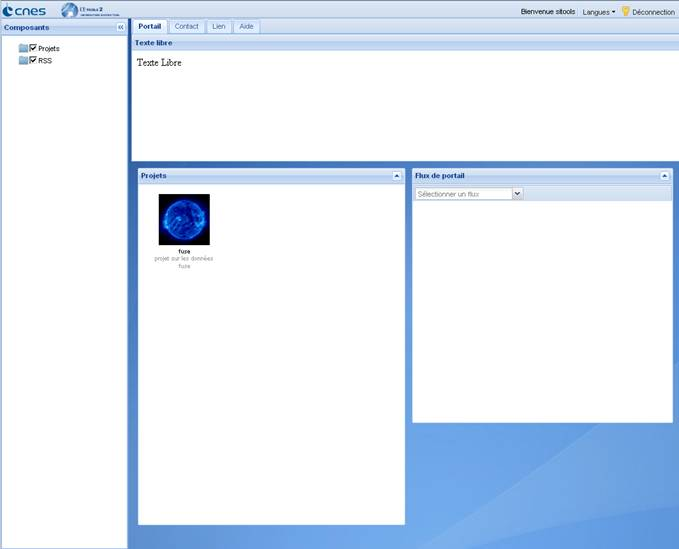
Figure 1: Portail utilisateur
Il s'agit d'un portail contenant plusieurs « portlets » que l'on peut déplacer sur la page. Il est possible de choisir quels « portlets » sont affichés en les cochant ou en les décochant sur la partie Components à gauche. On peut consulter la liste des projets dans le « portlets » Projects ainsi que différents flux RSS définis au niveau du portail dans le portlet Portal feeds. On accède à un projet en double cliquant dessus.
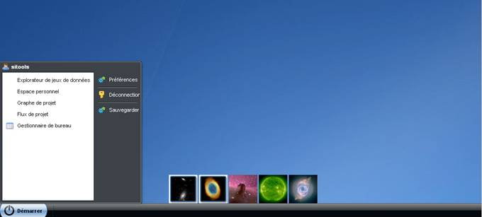
Figure 2: Bureau utilisateur
Ce bureau utilisateur permet d’accéder à différentes fenêtres de l’application. Ces fenêtres sont accessibles via le menu Démarrer ou via le « fisheye » présent au dessus de la barre du bureau.
Il est possible de sauvegarder son bureau (position des fenêtres disponible dans le menu Démarer) afin qu’elles s’ouvrent automatiquement lors d’une prochaine connexion. Pour cela il suffit de s’enregistrer, de posséder un espace utilisateur et de cliquer sur le bouton Sauvegarder dans le menu Démarer.
. 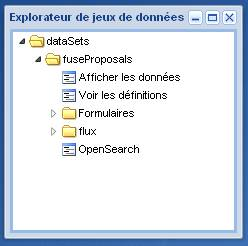
Figure 3: Dataset Explorer
Il permet d'explorer l'ensemble des jeux de données du projet et donne accès aux différents services sur ces jeux de donnèes. Pour accéder à un service il suffit de cliquer sur l'un d'entre eux.
|
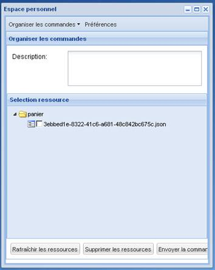 Figure 4: Visualisation du panier |
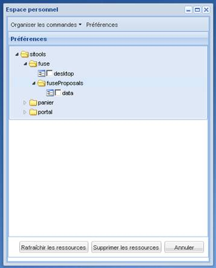 Figure 5: Visualisation des préférences |
Cette fenêtre permet de consulter son panier et les commandes effectuées. On peut également consulter ses préférences et les supprimer.
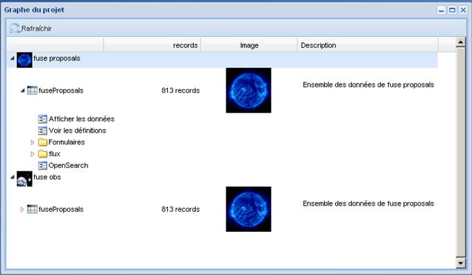
Figure 6: Graphe du projet
Il permet d'accéder aux mêmes services sur les jeux de données que l'explorateur de jeux de données mais organisés d'une façon différente. Il offre également un peu plus d'informations, à savoir :
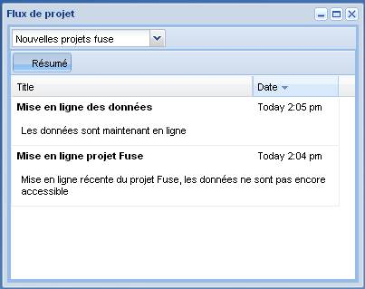
Sous Mozilla Firefox, il est également possible de s'abonner à ces flux en cliquant sur l'icône RSS à droite de la barre d'adresse.
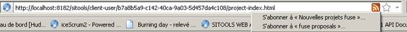
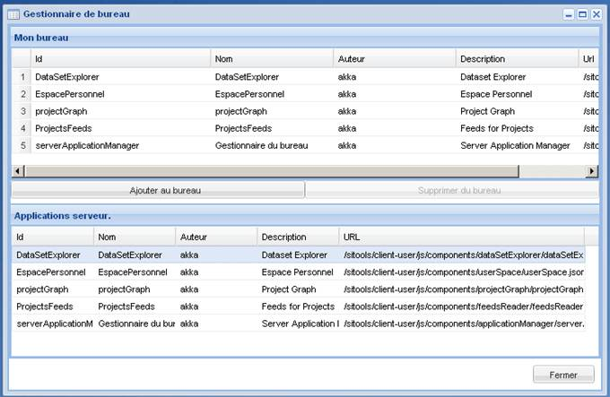
Figure 7: Gestionnaire de bureau
Cette fenêtre permet de choisir les applications disponibles sur le bureau.
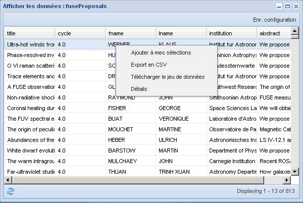
Figure 8: Afficher les données
Cette fenêtre est accessible via Afficher les données de l'explorateur de jeux de données.
Elle affiche l'ensemble des données contenues dans le jeu de données.
On peut appliquer des services sur ces données :
Il est possible de sauvegarder les paramètres de cette fenêtre en cliquant sur Enr. configuration. Dans ce cas, sont sauvegardés la position et la taille de la fenétre, la position et la taille des colonnes ainsi que leurs visibilitées.
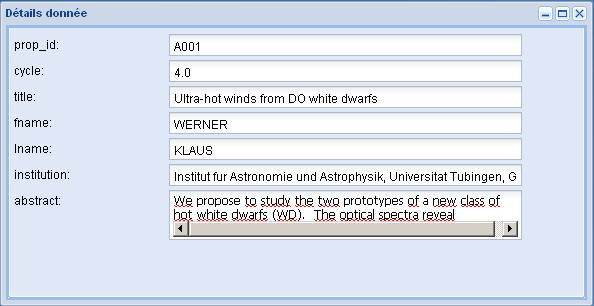
Figure 9: Détails d'une donnée
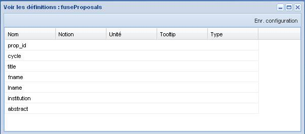
Figure 10: Voir les définitions
Cette fenêtre est accessible via le menu Voir les définitions de l'explorateur de jeux de données.
Il est possible de sauvegarder les paramètres de cette fenêtre en cliquant sur Enr. configuration. Dans ce cas, sont sauvegardés la position et la taille de la fenêtre.
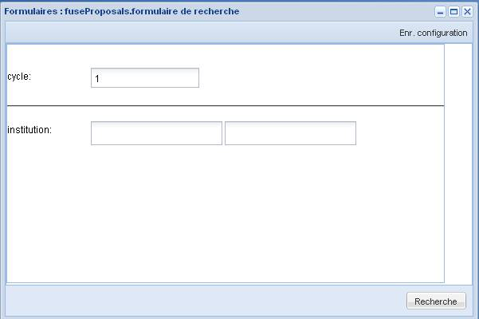
Figure 11: Formulaire de recherche
Cette fenêtre est accessible via la liste des formulaires sous le dossier Formulaires de l'explorateur de jeux de données.
Il est possible de sauvegarder les paramètres de cette fenêtre en cliquant sur Enr. configuration. Dans ce cas, sont sauvegardés la position et la taille de la fenêtre.
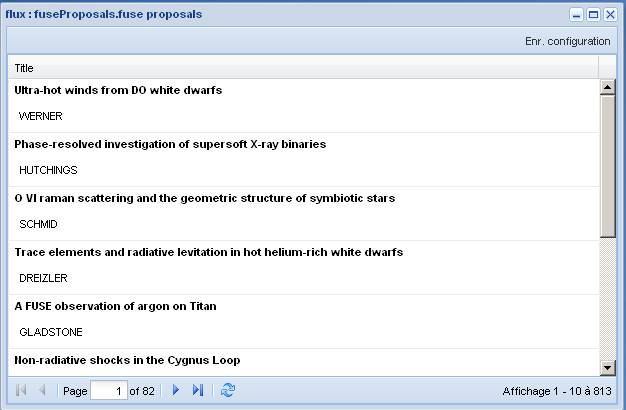
Figure 12: Flux sur les jeux de données
Cette fenêtre est accessible via la liste des formulaires sous le dossier Flux de l'explorateur de jeux de données.
Dans le cas où il s'agit d'un flux sur les données du jeu de données on peut consulter ses détails donnée en double cliquant sur la ligne de la donnée.
Il est possible de sauvegarder les paramètres de cette fenêtre en cliquant sur Enr. configuration. Dans ce cas, sont sauvegardés la position et la taille de la fenêtre.
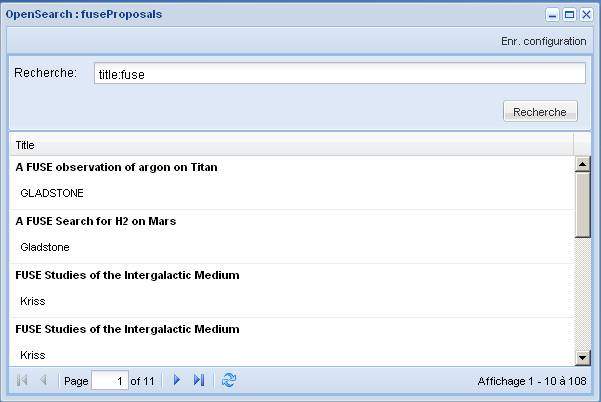
Figure 13: Recherche OpenSearch
Cette fenêtre est accessible via le menu OpenSearch de l'explorateur de jeux de données.
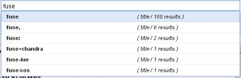
http://lucene.apache.org/java/2_3_2/queryparsersyntax.html
http://www.opensearch.org/Specifications/OpenSearch/1.1#Template_grammar
Double cliquer sur la ligne de la donnée.
Il est possible de sauvegarder les paramètres de cette fenêtre en cliquant sur Enr. configuration. Dans ce cas, sont sauvegardés la position et la taille de la fenêtre.
Sous Mozilla Firefox, il est possible d'utiliser cet index OpenSearch comme moteur de recherche en l'ajoutant à la liste des moteurs de recherche
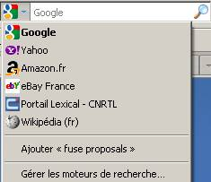